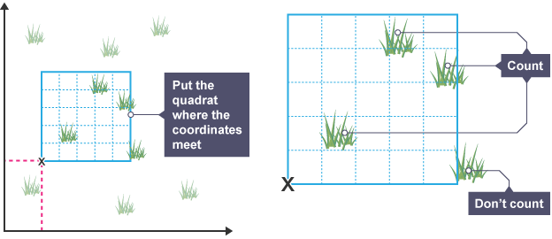
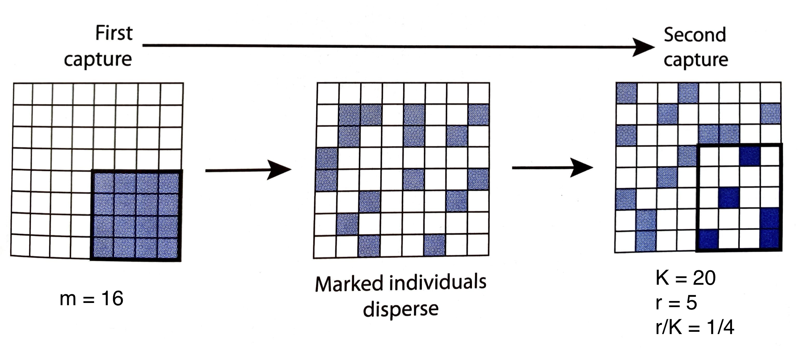
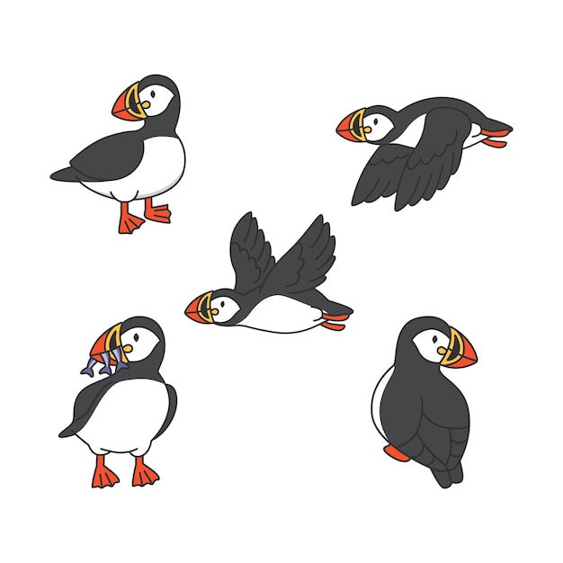

Wild Stats for Population Ecology
or: How to Count What Won’t Sit Still
University of Dundee
The Problem
Question:
How do we determine the size of a population?
Census
- A census counts every member of population.
- For wildlife, all members must be present simultaneously in terrain where concealment is impossible (think: barrenground caribou on open tundra).
- Counting every member of a population is not always possible!
Population estimation
In majority of cases, the size of a plant or animal population must be estimated from a sample. We infer the population size using statistics.
Aside
What is Statistics?
Statistics is the science of understanding uncertainty and natural variation.

Statistics is a collection of procedures and principles for gaining and analyzing information to educate people and help them make better decisions when faced with uncertainty. (Utts, 2014)
Statistical inference
- Often we are interested in estimating a characteristic of a population based on a small number of samples.
- When we estimate a population characteristic using an inferential procedure, we can sometimes make errors!
%%{init: {'theme': 'base', 'themeVariables': { 'fontSize': '28px'}}}%%
flowchart LR
A(("Data")) & B(("Models")) --> C(("Inference")) ==> D(("Population"))
Estimating populations
Sampling subjects that ‘sit still’
Figure 3: BBC Bitesize, Collecting data - quadrats.
- When distribution is homogeneous: random sampling without replacement.
- When distribution is inhomogeneous: stratefied sampling along “transects”.
Estimate the number of grass plants found in the whole area in Figure 3
\text{Total grass plants found in sample} \times \frac{\text{Total area}\;(m^2)}{\text{Total area sampled}\;(m^2)}
Discussion
But what to do if subjects move?
Sampling subject that move
Want to estimate N, the number of animals in a population. Strategy: use a two-sample capture-recapture method.1
- Sampling 1: capture, mark, and release m animals.
- Sampling 2: recapture K animals and count marked animals (r recaptures).
- Proportion of marked individuals recaptured equals proportion of total animals marked: \frac{r}{K} = \frac{m}{N} \,.
Capture-Recapture Inference
Figure 5: Schematic of a capture-recpature strategy. Each square represents one individual, each light blue square reprents a marked individual, and dark blue squares represent recaptures; adapted from C. Krebs, Ecology: the experimental analysis of distribution and abundance, 6 ed., Pearson: London (2009).
Estimate for population size
\hat{N} = \frac{m \cdot K}{r}
Try it!
Work in small groups to apply the capture-recapture method to estimate N.
- “Capture” a number, m, of puffins. Mark these puffins and “release” them back into the environment.
- Make sure the puffins mix in the environment!
- “Capture” number, K, of puffins. Count the number of recaptures, r.
- Use the formula to calculate \hat{N}.

Estimate for population size
\hat{N} = \frac{m \cdot K}{r}
Assumptions
What assumptions does capture-recapture make?
Capture-Recapture Assumptions
- Animals are captured randomly in both period 1 and period 2 (no animal is easier/harder to catch).
- The environment is closed (no birth, death, or migration between research visits).1
- Sample sizes are large enough (for assymptotically unbiased estimates).
Robustness
How good is the esimtate? How does it depend on m and K?
Statistics by simulations
#| standalone: true
#| viewerHeight: 620
library(shiny)
library(bslib)
library(ggplot2)
ui <- page_sidebar(
sidebar = sidebar(
title = "Parameters",
numericInput("N", "Population size N", value = 200, min = 10, step = 1),
sliderInput("m", "Marked in first sample m", min = 1, max = 200, value = 50, step = 1),
sliderInput("K", "Second sample size K", min = 1, max = 200, value = 60, step = 1),
checkboxInput("logx", "Log x-axis", value = FALSE),
selectInput("est", "Estimator", c("Lincoln–Petersen" = "LP", "Chapman" = "CH")),
numericInput("reps", "Replicates", value = 1000, min = 100, step = 100),
actionButton("resim", "Re-run simulation"),
helpText("Runs capture–recapture simulations replicate number of times.")
),
navset_card_underline(
nav_panel("Histogram", plotOutput("hist")),
nav_panel("Summary", tableOutput("summary"))
)
)
server <- function(input, output, session) {
# Keep sliders within bounds of N
observe({
N <- as.integer(input$N)
if (isTRUE(N > 1)) {
updateSliderInput(session, "m", max = N, value = min(isolate(input$m), N))
updateSliderInput(session, "K", max = N, value = min(isolate(input$K), N))
}
})
nhat_rv <- reactiveVal(NULL)
recompute <- function() {
N <- as.integer(input$N)
m <- as.integer(input$m)
K <- as.integer(input$K)
if (!is.finite(N) || N < 2) { nhat_rv(rep(NA_real_, 100)); return(invisible()) }
m <- max(1L, min(m, N))
K <- max(1L, min(K, N))
reps <- as.integer(input$reps)
# rvec <- integer(reps)
# for (i in seq_len(reps)) {
# idx <- sample.int(N, K, replace = FALSE)
# rvec[i] <- sum(idx <= m)
# }
rvec <- rhyper(nn = reps, m = m, n = N - m, k = K)
nh <- if (identical(input$est, "LP")) {
ifelse(rvec > 0L, (m * K) / rvec, NA_real_)
} else {
((m + 1) * (K + 1)) / (rvec + 1) - 1
}
nhat_rv(nh)
invisible()
}
observeEvent(input$resim, { recompute() })
observeEvent(list(input$N, input$m, input$K), { recompute() }, ignoreInit = TRUE)
# initial run
observe({ recompute() })
output$hist <- renderPlot({
nh <- nhat_rv()
N <- as.integer(input$N)
vals <- nh[is.finite(nh)]
if (!length(vals)) {
plot.new(); title("No finite estimates to plot (all r = 0)")
return(invisible())
}
n <- length(vals)
# Choose bins by a non data-driven rule of thumb (Rice rule)
nb <- max(min(ceiling(2 * (n)^(1/3)), 200L), 5L)
p <- ggplot(data.frame(nhat = vals), aes(x = nhat)) +
geom_histogram(bins = nb, color = "white", fill = "#4365e2") +
scale_x_continuous(limits = c(0, 3 * N)) +
geom_vline(xintercept = N, linetype = "dashed", linewidth = 1, color = "#ff6264") +
labs(title = sprintf("Distribution of estimated population size (%d replicates)", n),
x = expression(hat(N)), y = "Count") +
theme_classic(base_size = 16)
if (input$logx) {
p <- p + scale_x_log10()
} else {
p <- p + coord_cartesian(xlim = c(0, 4 * N))
}
p
})
output$summary <- renderTable({
nh <- nhat_rv()
N <- as.integer(input$N)
finite_mask <- is.finite(nh)
x <- nh[finite_mask]
n_eff <- length(x)
na_rate <- mean(is.na(nh))
mean_x <- if (n_eff) mean(x) else NA_real_
med_x <- if (n_eff) median(x) else NA_real_
sd_x <- if (n_eff) sd(x) else NA_real_
iqr_x <- if (n_eff) IQR(x) else NA_real_
min_x <- if (n_eff) min(x) else NA_real_
max_x <- if (n_eff) max(x) else NA_real_
bias <- if (n_eff) mean_x - N else NA_real_
rel_bias <- if (n_eff && N != 0) bias / N else NA_real_
rmse <- if (n_eff) sqrt(mean((x - N)^2)) else NA_real_
nhat_sym <- "N-hat" # Unicode N\u0302
vals <- c(
N,
mean_x,
med_x,
sd_x,
iqr_x,
min_x,
max_x,
bias,
rel_bias,
rmse,
na_rate
)
nms <- c(
"True N",
paste0("Mean( ", nhat_sym, " )"),
paste0("Median( ", nhat_sym, " )"),
paste0("SD( ", nhat_sym, " )"),
paste0("IQR( ", nhat_sym, " )"),
paste0("Min( ", nhat_sym, " )"),
paste0("Max( ", nhat_sym, " )"),
paste0("Bias = Mean( ", nhat_sym, " ) - N"),
paste0("Relative Bias = Bias / N"),
paste0("RMSE = sqrt( E[( ", nhat_sym, " - N )^2] )"),
"Mean( is.na(nh) )"
)
data.frame(Statistic = nms, Value = as.numeric(vals), check.names = FALSE)
}, rownames = FALSE, colnames = TRUE)
}
shinyApp(ui, server)Closing
Recap
- We described three methods for determining population size: census, single period sampling (random and stratefied sampling), and two-period sampling (capture-recapture).
- We undertook an activity to calculate a capture-recpature estimate for the population size.
- We explored statistical simulations to understand how that inference depends on parameters.
Mathematics module highlights
The Dundee Difference
- Experiential learning activities within modules (Botanics workshop, programming, report writing) and module choices (work placement and project modules).
- Focus on process, context, and communicating outcome - following best practices in mathematical modelling and statistics education.
- Inclusion of real data sets, considering context through the lens of social justice.
Thanks for listening
Enjoy the rest of your day at the University of Dundee!